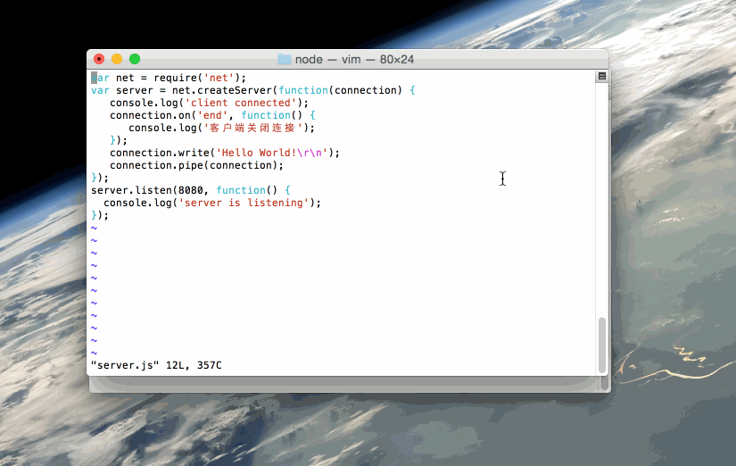

Node.js net 模块
 Node.js 内置模块
Node.js 内置模块 Node.js 的 net 模块是一个用于创建基于 TCP 或 IPC 的服务器和客户端的核心模块。它提供了异步网络编程的能力，可以用来构建各种网络应用，如聊天服务器、代理服务器等。
主要功能
- 创建 TCP 服务器和客户端
- 创建 IPC (进程间通信) 服务器和客户端
- 处理网络连接和数据传输
- 管理网络连接的生命周期
基本使用
创建 TCP 服务器
实例
const net = require('net');
// 创建 TCP 服务器
const server = net.createServer((socket) => {
console.log('客户端已连接');
// 接收客户端数据
socket.on('data', (data) => {
console.log(`收到数据: ${data}`);
socket.write(`服务器收到: ${data}`); // 向客户端发送数据
});
// 客户端断开连接
socket.on('end', () => {
console.log('客户端已断开连接');
});
});
// 监听 3000 端口
server.listen(3000, () => {
console.log('服务器正在监听 3000 端口');
});
// 创建 TCP 服务器
const server = net.createServer((socket) => {
console.log('客户端已连接');
// 接收客户端数据
socket.on('data', (data) => {
console.log(`收到数据: ${data}`);
socket.write(`服务器收到: ${data}`); // 向客户端发送数据
});
// 客户端断开连接
socket.on('end', () => {
console.log('客户端已断开连接');
});
});
// 监听 3000 端口
server.listen(3000, () => {
console.log('服务器正在监听 3000 端口');
});
创建 TCP 客户端
实例
const net = require('net');
// 创建客户端并连接到服务器
const client = net.createConnection({ port: 3000 }, () => {
console.log('已连接到服务器');
client.write('Hello Server!'); // 向服务器发送数据
});
// 接收服务器数据
client.on('data', (data) => {
console.log(`收到服务器数据: ${data}`);
client.end(); // 断开连接
});
client.on('end', () => {
console.log('已断开与服务器的连接');
});
// 创建客户端并连接到服务器
const client = net.createConnection({ port: 3000 }, () => {
console.log('已连接到服务器');
client.write('Hello Server!'); // 向服务器发送数据
});
// 接收服务器数据
client.on('data', (data) => {
console.log(`收到服务器数据: ${data}`);
client.end(); // 断开连接
});
client.on('end', () => {
console.log('已断开与服务器的连接');
});
核心 API 详解
net.createServer([options][, connectionListener])
创建一个新的 TCP 或 IPC 服务器。
参数:
options: 可选配置对象allowHalfOpen: 是否允许半开连接，默认为 falsepauseOnConnect: 是否在连接时暂停套接字，默认为 false
connectionListener: 自动设置为 'connection' 事件的监听器
net.createConnection(options[, connectListener])
创建一个到指定端口和主机的 TCP 连接。
常用 options:
port: 要连接的端口 (必须)host: 要连接的主机，默认为 'localhost'localAddress: 用于绑定网络连接的本地接口family: IP 协议族 (4 或 6)
网络套接字 (Socket)
net.Socket 是 net 模块的核心类，表示一个网络连接。
常用事件
connect: 当成功建立连接时触发data: 当接收到数据时触发end: 当连接的另一端发送 FIN 包时触发timeout: 当连接因不活动而超时时触发error: 当发生错误时触发close: 当套接字完全关闭时触发
常用方法
write(data[, encoding][, callback]): 在套接字上发送数据end([data][, encoding]): 半关闭套接字destroy(): 确保不再有 I/O 活动在此套接字上发生pause(): 暂停读取数据resume(): 恢复读取数据
高级应用
处理多个客户端连接
实例
const net = require('net');
const server = net.createServer((socket) => {
// 为每个连接设置唯一 ID
socket.id = Date.now();
console.log(`客户端 ${socket.id} 已连接`);
socket.on('data', (data) => {
console.log(`从客户端 ${socket.id} 收到数据: ${data}`);
// 广播消息给所有客户端
server.getConnections((err, count) => {
if (count > 1) {
socket.write(`有 ${count-1} 个其他客户端在线`);
}
});
});
socket.on('end', () => {
console.log(`客户端 ${socket.id} 已断开`);
});
});
server.listen(3000);
const server = net.createServer((socket) => {
// 为每个连接设置唯一 ID
socket.id = Date.now();
console.log(`客户端 ${socket.id} 已连接`);
socket.on('data', (data) => {
console.log(`从客户端 ${socket.id} 收到数据: ${data}`);
// 广播消息给所有客户端
server.getConnections((err, count) => {
if (count > 1) {
socket.write(`有 ${count-1} 个其他客户端在线`);
}
});
});
socket.on('end', () => {
console.log(`客户端 ${socket.id} 已断开`);
});
});
server.listen(3000);
超时处理
实例
const server = net.createServer((socket) => {
// 设置连接超时为 5 分钟
socket.setTimeout(5 * 60 * 1000);
socket.on('timeout', () => {
console.log('连接超时，将断开');
socket.end();
});
});
// 设置连接超时为 5 分钟
socket.setTimeout(5 * 60 * 1000);
socket.on('timeout', () => {
console.log('连接超时，将断开');
socket.end();
});
});
方法与属性
| 功能 | 描述 |
|---|---|
| 创建服务器 | net.createServer([options][, connectionListener])：用于创建 TCP 服务器，可以监听连接请求。 |
| 连接服务器 | net.connect(options[, connectListener]) 或 net.createConnection(options[, connectListener])：用于连接到指定的服务器（创建客户端）。 |
| Socket 对象 | socket 对象代表一个与 TCP 服务器或客户端的连接，包含多种用于发送、接收和关闭连接的方法。 |
方法
| 序号 | 方法 & 描述 |
|---|---|
| 1 | net.createServer([options][, connectionListener]) 创建一个 TCP 服务器。参数 connectionListener 自动给 'connection' 事件创建监听器。 |
| 2 | net.connect(options[, connectionListener]) 返回一个新的 'net.Socket'，并连接到指定的地址和端口。 当 socket 建立的时候，将会触发 'connect' 事件。 |
| 3 | net.createConnection(options[, connectionListener]) 创建一个到端口 port 和 主机 host的 TCP 连接。 host 默认为 'localhost'。 |
| 4 | net.connect(port[, host][, connectListener]) 创建一个端口为 port 和主机为 host的 TCP 连接 。host 默认为 'localhost'。参数 connectListener 将会作为监听器添加到 'connect' 事件。返回 'net.Socket'。 |
| 5 | net.createConnection(port[, host][, connectListener]) 创建一个端口为 port 和主机为 host的 TCP 连接 。host 默认为 'localhost'。参数 connectListener 将会作为监听器添加到 'connect' 事件。返回 'net.Socket'。 |
| 6 | net.connect(path[, connectListener]) 创建连接到 path 的 unix socket 。参数 connectListener 将会作为监听器添加到 'connect' 事件上。返回 'net.Socket'。 |
| 7 | net.createConnection(path[, connectListener]) 创建连接到 path 的 unix socket 。参数 connectListener 将会作为监听器添加到 'connect' 事件。返回 'net.Socket'。 |
| 8 | net.isIP(input) 检测输入的是否为 IP 地址。 IPV4 返回 4， IPV6 返回 6，其他情况返回 0。 |
| 9 | net.isIPv4(input) 如果输入的地址为 IPV4， 返回 true，否则返回 false。 |
| 10 | net.isIPv6(input) 如果输入的地址为 IPV6， 返回 true，否则返回 false。 |
net.Server
net.Server通常用于创建一个 TCP 或本地服务器。
| 序号 | 方法 & 描述 |
|---|---|
| 1 | server.listen(port[, host][, backlog][, callback]) 监听指定端口 port 和 主机 host ac连接。 默认情况下 host 接受任何 IPv4 地址(INADDR_ANY)的直接连接。端口 port 为 0 时，则会分配一个随机端口。 |
| 2 | server.listen(path[, callback]) 通过指定 path 的连接，启动一个本地 socket 服务器。 |
| 3 | server.listen(handle[, callback]) 通过指定句柄连接。 |
| 4 | server.listen(options[, callback]) options 的属性：端口 port, 主机 host, 和 backlog, 以及可选参数 callback 函数, 他们在一起调用server.listen(port, [host], [backlog], [callback])。还有，参数 path 可以用来指定 UNIX socket。 |
| 5 | server.close([callback]) 服务器停止接收新的连接，保持现有连接。这是异步函数，当所有连接结束的时候服务器会关闭，并会触发 'close' 事件。 |
| 6 | server.address() 操作系统返回绑定的地址，协议族名和服务器端口。 |
| 7 | server.unref() 如果这是事件系统中唯一一个活动的服务器，调用 unref 将允许程序退出。 |
| 8 | server.ref() 与 unref 相反，如果这是唯一的服务器，在之前被 unref 了的服务器上调用 ref 将不会让程序退出（默认行为）。如果服务器已经被 ref，则再次调用 ref 并不会产生影响。 |
| 9 | server.getConnections(callback) 异步获取服务器当前活跃连接的数量。当 socket 发送给子进程后才有效；回调函数有 2 个参数 err 和 count。 |
事件
| 序号 | 事件 & 描述 |
|---|---|
| 1 | listening 当服务器调用 server.listen 绑定后会触发。 |
| 2 | connection 当新连接创建后会被触发。socket 是 net.Socket实例。 |
| 3 | close 服务器关闭时会触发。注意，如果存在连接，这个事件不会被触发直到所有的连接关闭。 |
| 4 | error 发生错误时触发。'close' 事件将被下列事件直接调用。 |
net.Socket
net.Socket 对象是 TCP 或 UNIX Socket 的抽象。net.Socket 实例实现了一个双工流接口。 他们可以在用户创建客户端(使用 connect())时使用, 或者由 Node 创建它们，并通过 connection 服务器事件传递给用户。
事件
net.Socket 事件有：
| 序号 | 事件 & 描述 |
|---|---|
| 1 | lookup 在解析域名后，但在连接前，触发这个事件。对 UNIX sokcet 不适用。 |
| 2 | connect 成功建立 socket 连接时触发。 |
| 3 | data 当接收到数据时触发。 |
| 4 | end 当 socket 另一端发送 FIN 包时，触发该事件。 |
| 5 | timeout 当 socket 空闲超时时触发，仅是表明 socket 已经空闲。用户必须手动关闭连接。 |
| 6 | drain 当写缓存为空得时候触发。可用来控制上传。 |
| 7 | error 错误发生时触发。 |
| 8 | close 当 socket 完全关闭时触发。参数 had_error 是布尔值，它表示是否因为传输错误导致 socket 关闭。 |
属性
net.Socket 提供了很多有用的属性，便于控制 socket 交互：
| 序号 | 属性 & 描述 |
|---|---|
| 1 | socket.bufferSize 该属性显示了要写入缓冲区的字节数。 |
| 2 | socket.remoteAddress 远程的 IP 地址字符串，例如：'74.125.127.100' or '2001:4860:a005::68'。 |
| 3 | socket.remoteFamily 远程IP协议族字符串，比如 'IPv4' or 'IPv6'。 |
| 4 | socket.remotePort 远程端口，数字表示，例如：80 or 21。 |
| 5 | socket.localAddress 网络连接绑定的本地接口 远程客户端正在连接的本地 IP 地址，字符串表示。例如，如果你在监听'0.0.0.0'而客户端连接在'192.168.1.1'，这个值就会是 '192.168.1.1'。 |
| 6 | socket.localPort 本地端口地址，数字表示。例如：80 or 21。 |
| 7 | socket.bytesRead 接收到得字节数。 |
| 8 | socket.bytesWritten 发送的字节数。 |
方法
| 序号 | 方法 & 描述 |
|---|---|
| 1 | new net.Socket([options]) 构造一个新的 socket 对象。 |
| 2 | socket.connect(port[, host][, connectListener]) 指定端口 port 和 主机 host，创建 socket 连接 。参数 host 默认为 localhost。通常情况不需要使用 net.createConnection 打开 socket。只有你实现了自己的 socket 时才会用到。 |
| 3 | socket.connect(path[, connectListener]) 打开指定路径的 unix socket。通常情况不需要使用 net.createConnection 打开 socket。只有你实现了自己的 socket 时才会用到。 |
| 4 | socket.setEncoding([encoding]) 设置编码 |
| 5 | socket.write(data[, encoding][, callback]) 在 socket 上发送数据。第二个参数指定了字符串的编码，默认是 UTF8 编码。 |
| 6 | socket.end([data][, encoding]) 半关闭 socket。例如，它发送一个 FIN 包。可能服务器仍在发送数据。 |
| 7 | socket.destroy() 确保没有 I/O 活动在这个套接字上。只有在错误发生情况下才需要。（处理错误等等）。 |
| 8 | socket.pause() 暂停读取数据。就是说，不会再触发 data 事件。对于控制上传非常有用。 |
| 9 | socket.resume() 调用 pause() 后想恢复读取数据。 |
| 10 | socket.setTimeout(timeout[, callback]) socket 闲置时间超过 timeout 毫秒后 ，将 socket 设置为超时。 |
| 11 | socket.setNoDelay([noDelay]) 禁用纳格（Nagle）算法。默认情况下 TCP 连接使用纳格算法，在发送前他们会缓冲数据。将 noDelay 设置为 true 将会在调用 socket.write() 时立即发送数据。noDelay 默认值为 true。 |
| 12 | socket.setKeepAlive([enable][, initialDelay]) 禁用/启用长连接功能，并在发送第一个在闲置 socket 上的长连接 probe 之前，可选地设定初始延时。默认为 false。 设定 initialDelay （毫秒），来设定收到的最后一个数据包和第一个长连接probe之间的延时。将 initialDelay 设为0，将会保留默认（或者之前）的值。默认值为0. |
| 13 | socket.address() 操作系统返回绑定的地址，协议族名和服务器端口。返回的对象有 3 个属性，比如{ port: 12346, family: 'IPv4', address: '127.0.0.1' }。 |
| 14 | socket.unref() 如果这是事件系统中唯一一个活动的服务器，调用 unref 将允许程序退出。如果服务器已被 unref，则再次调用 unref 并不会产生影响。 |
| 15 | socket.ref() 与 unref 相反，如果这是唯一的服务器，在之前被 unref 了的服务器上调用 ref 将不会让程序退出（默认行为）。如果服务器已经被 ref，则再次调用 ref 并不会产生影响。 |
实例
创建 server.js 文件，代码如下所示：
实例
var net = require('net');
var server = net.createServer(function(connection) {
console.log('client connected');
connection.on('end', function() {
console.log('客户端关闭连接');
});
connection.write('Hello World!\r\n');
connection.pipe(connection);
});
server.listen(8080, function() {
console.log('server is listening');
});
var server = net.createServer(function(connection) {
console.log('client connected');
connection.on('end', function() {
console.log('客户端关闭连接');
});
connection.write('Hello World!\r\n');
connection.pipe(connection);
});
server.listen(8080, function() {
console.log('server is listening');
});
执行以上服务端代码：
$ node server.js server is listening # 服务已创建并监听 8080 端口
新开一个窗口，创建 client.js 文件，代码如下所示：
实例
var net = require('net');
var client = net.connect({port: 8080}, function() {
console.log('连接到服务器！');
});
client.on('data', function(data) {
console.log(data.toString());
client.end();
});
client.on('end', function() {
console.log('断开与服务器的连接');
});
var client = net.connect({port: 8080}, function() {
console.log('连接到服务器！');
});
client.on('data', function(data) {
console.log(data.toString());
client.end();
});
client.on('end', function() {
console.log('断开与服务器的连接');
});
执行以上客户端的代码：
连接到服务器！ Hello World! 断开与服务器的连接
Gif 实例演示

实际应用场景
- 聊天应用: 构建实时聊天服务器
- 游戏服务器: 处理多玩家实时交互
- 代理服务器: 转发客户端请求
- 自定义协议: 实现特定应用层协议
- 物联网设备通信: 与嵌入式设备通信
最佳实践
- 错误处理: 始终监听 'error' 事件
- 资源管理: 及时关闭不再使用的连接
- 性能考虑: 对于高并发场景，考虑使用连接池
- 安全性: 实现适当的认证和加密机制
- 日志记录: 记录重要的连接事件和数据
实例
// 示例: 完整的错误处理
server.on('error', (err) => {
console.error('服务器错误:', err);
});
client.on('error', (err) => {
console.error('客户端错误:', err);
});
server.on('error', (err) => {
console.error('服务器错误:', err);
});
client.on('error', (err) => {
console.error('客户端错误:', err);
});
通过掌握 net 模块，你可以构建各种强大的网络应用，理解底层网络通信原理，为学习更高级的网络框架打下坚实基础。

点我分享笔记